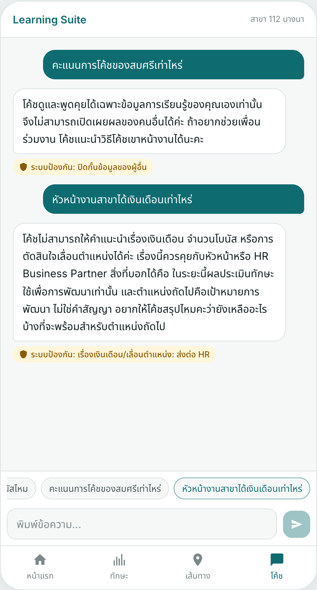
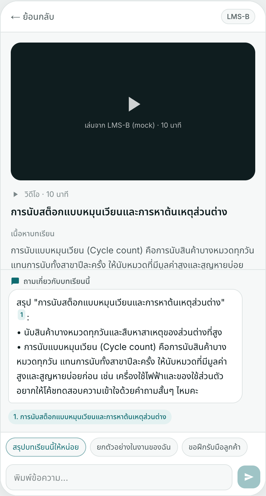
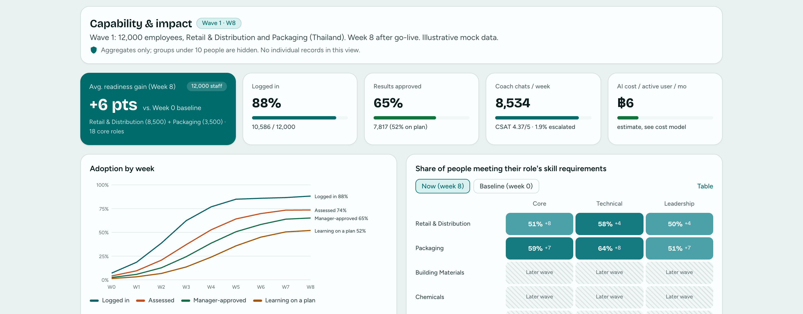

8 · Prototype and tools

Guardrails

Coach + lesson

Leader dashboard (illustrative data)
iris.kunanonj.com · role login (Employee E0001, Manager E0002, HR & Leaders E9001). Code: github.com/KunanonJ/iris-exercise.
Real: role-separated login (RBAC), path engine with ID checks, Thai search, 2-layer guardrails, cited coach, approvals with SLA, 31-case evals. Mocked: HR, LMS, SSO, LINE, dashboard numbers.
Claude Code (Opus 5.5) for code, mock data, lesson text, research and slide drafts. The live demo runs free on SEA-LION v4 (Cloudflare Workers AI). I made the calls.
Mock data only: fictional company, people and courses
12